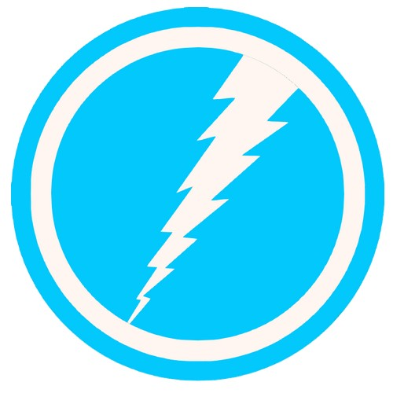
Vif-Argent (Pietro Maximoff) (Terre-616)
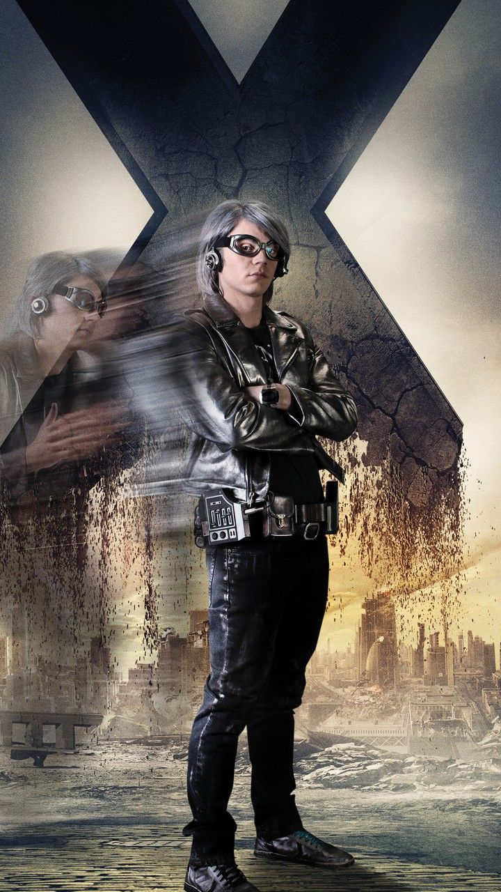
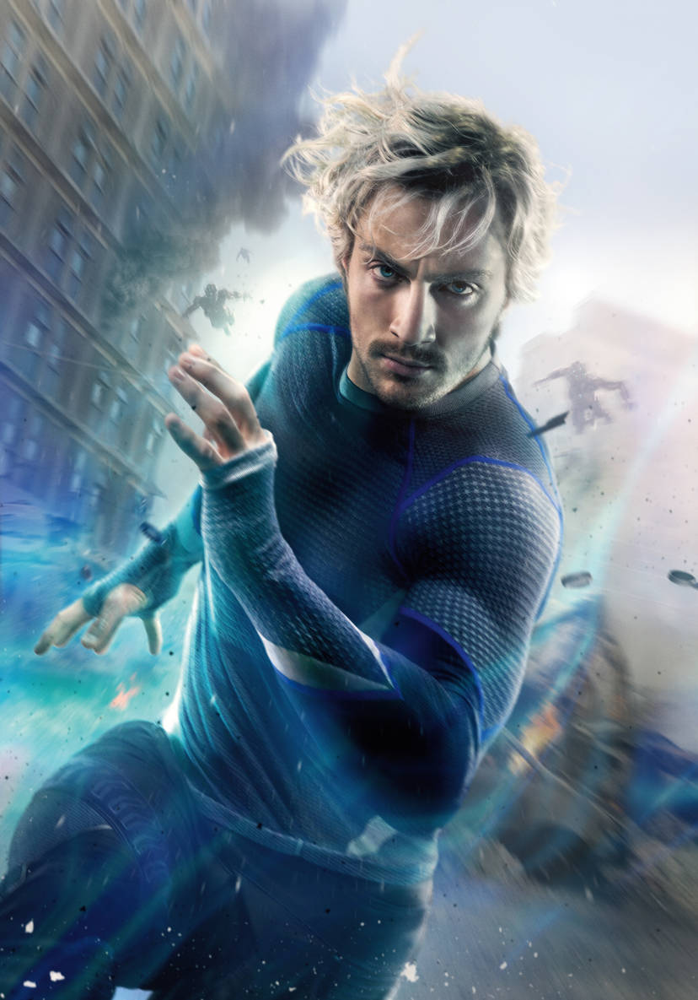
Origines :
Pietro Maximoff est le frère jumeau de Wanda Maximoff, et le fils du mutant Magnéto.
Leur mère, Natalya Maximoff, était une puissante sorcière tzigane, surnommée la Sorcière Rouge.
Après avoir donné naissance aux jumeaux, Natalya voulut leur éviter les difficultés auxquelles elle avait été confrontée en tant que sorcière et décida de les confier à son frère, Django, et son épouse Marya.
Peu de temps après, le village où habitaient les Maximoff fut attaqué.
Le Maître de l'Évolution kidnappa les enfants pour effectuer des expériences sur eux, mais peu satisfait du résultat, se désintéressa d'eux et les confia à Bova, une vache mutée.
Elle éleva les enfants sur le Mont Wundagore, où demeurait captif le démon ancestral Chthon.
Vif-Argent est le supposé fils de Magnéto, ancien leader de la Confrérie des mauvais mutants et grand ennemi des X-Men.
Devenus adultes et après quelques aventures au sein de la Confrérie, Pietro et sa sœur Wanda, fatigués de se battre de d'être considérés comme des criminels, ont été accueillis chez les Avengers.
Ils furent encadrés par Captain America, devenant ainsi la seconde génération de recrues en compagnie de Hawkeye, et devinrent en quelques années des héros aux yeux du grand public.
Après une terrible bataille opposant les Avengers et les Sentinelles, Vif-Argent fut sérieusement blessé et soigné par l'Inhumaine Crystal pendant des mois, et ne donna aucune nouvelle à ses coéquipiers.
Une idylle naquit entre le mutant et la princesse, et ils se marièrent. Ils eurent même une fille, Luna, mais se séparèrent peu après.
Quand sa sœur devint folle après avoir « perdu » ses enfants, plusieurs Avengers trouvèrent la mort, dont Hawkeye, Scott Lang où le Valet de Cœur, ce qui mena à la dissolution de l'équipe.
Wanda fut emmenée par Magnéto qui demanda l'aide de Charles Xavier pour la guérir, mais sa condition empira rapidement.
Les anciens Avengers et les X-Men se réunirent pour discuter de la conduite à mener, et Pietro découvrit qu'ils étaient prêts à l'euthanasier, que c'était la dernière chose à faire.
Vif-Argent rapporta les faits à son père, désespéré, mais ce dernier était hélas du côté de l'opinion populaire.
Pour sauver sa sœur, Pietro la convainquit d'utiliser son pouvoir afin de modifier la réalité et de créer un nouveau monde, où ils auraient ce qu'ils voulaient.
Wanda le fit et créa un monde ou Magnéto dirigeait, les mutants étaient l'espèce dominante, avec une famille royale à laquelle appartenait les jumeaux.
Toutefois, cette réalité s'écroula quand les héros commencèrent à se rappeler de leur réalité grâce à Layla Miller.
Croyant Magnéto responsable, les héros l'attaquèrent lui et sa famille, à Génosha.
Là, Layla lui rendit la mémoire et ils réalisèrent que c'était Pietro l'instigateur de tout ça.
En colère contre les actions de son fils, Magnéto le tua.
Cet acte fit basculer Wanda de nouveau.
Enragée que son père ait fait passer les mutants avant ses propres enfants, Wanda restaura presque involontairement la réalité, mais supprima les pouvoirs des mutants d'une simple phrase : « Plus de mutants ».
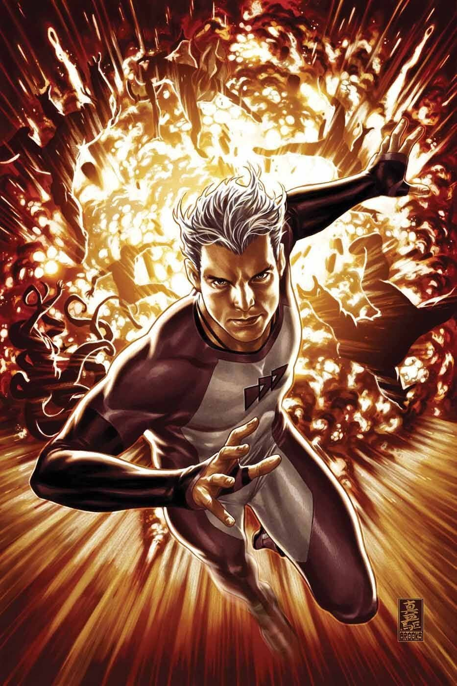
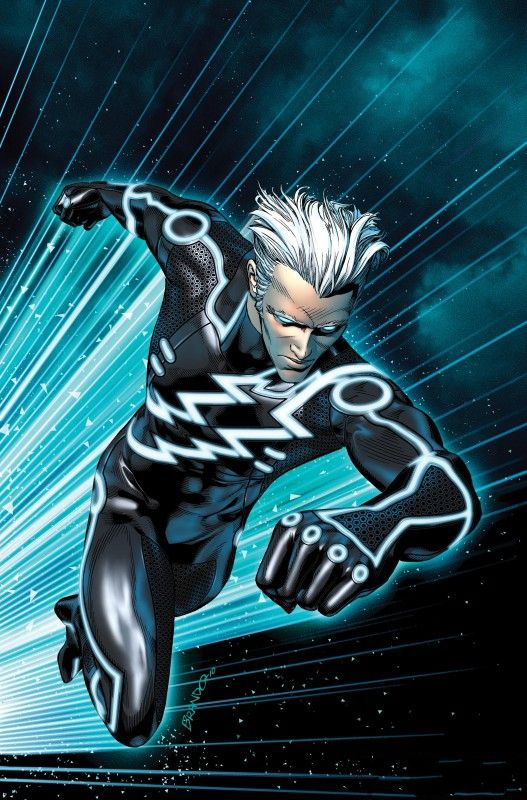
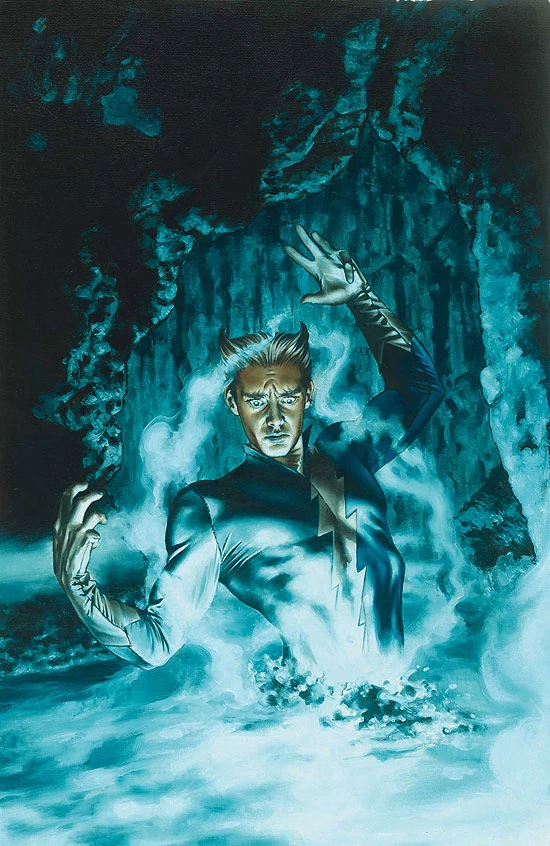
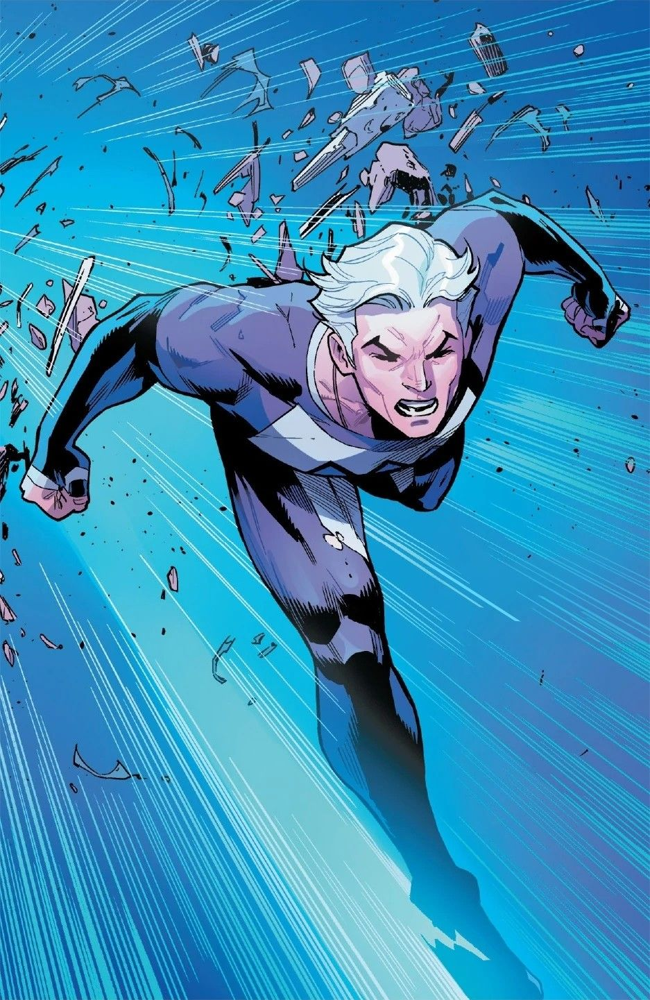
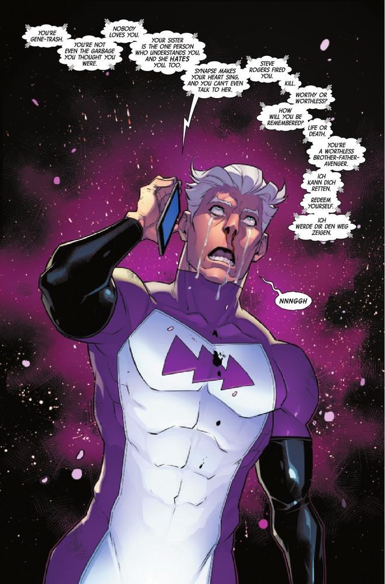
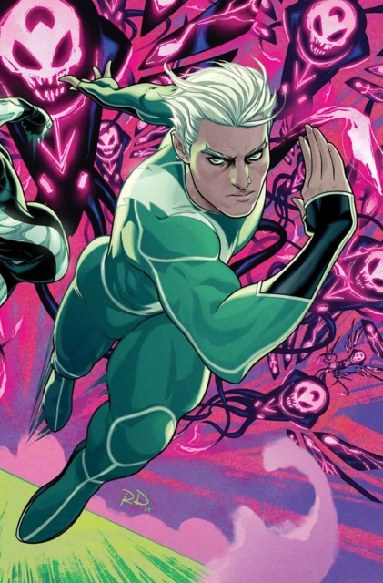

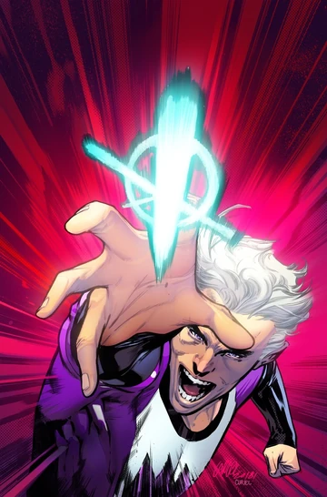
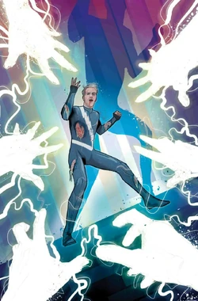
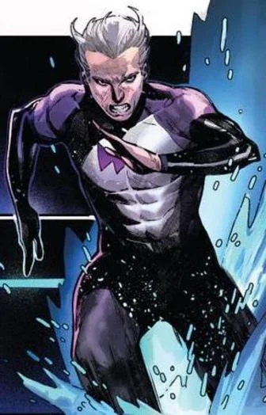
Personnalité :
Pietro est arrogant, impatient et souvent colérique, mais également profondément loyal et protecteur envers ceux qu'il aime, surtout sa sœur.
Son tempérament est souvent comparé à sa super-vitesse : il pense vite et agit vite, et supporte mal que les autres n'aillent pas à son rythme.
Capacités :
Pietro est un mutant qui, du fait des manipulations génétiques conduites par le Maître de l'Évolution sur son corps, possède le pouvoir de se déplacer à une vitesse extrême.
Sa vitesse serait estimée à environ 1280 km/h.

Costume :
Vif-Argent porte une combinaison moulante aérodynamique à manches longues, souvent d'un bleu clair ou turquoise très vif, et parfois violette.
Il porte des gants et des bottes blanches, avec un symbole en forme d'éclair de la même couleur sur la poitrine.
Ses cheveux sont argentés et hérissés en arrière.
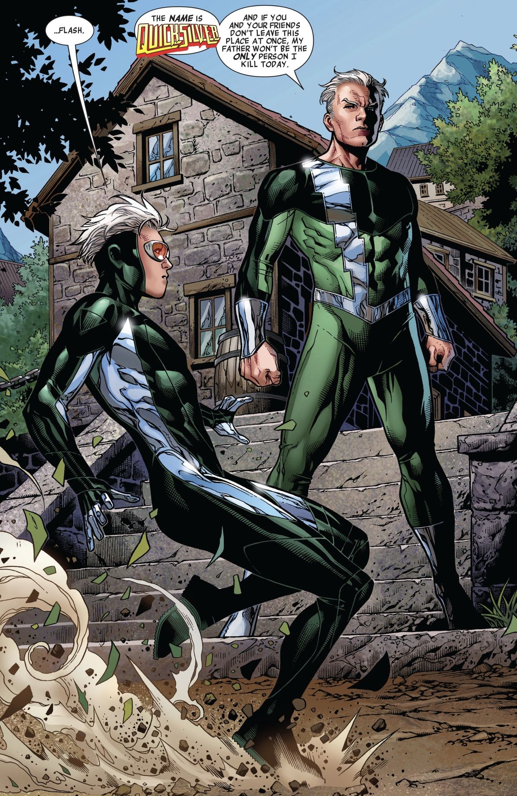
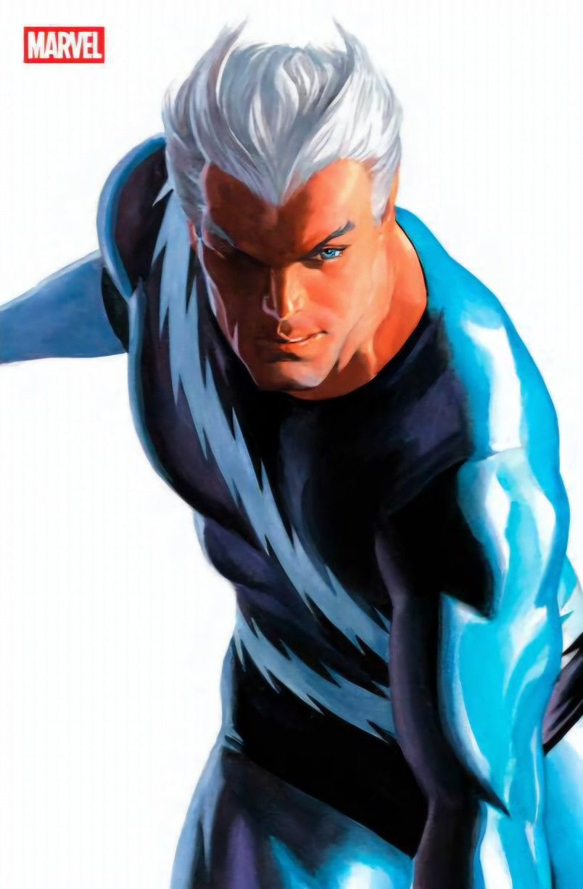
Les principaux ennemis de Vif-Argent
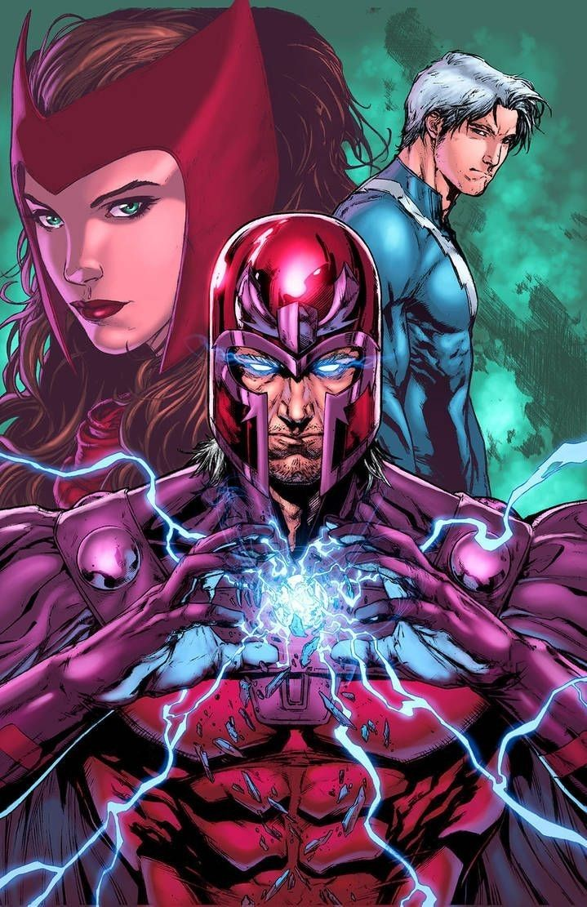


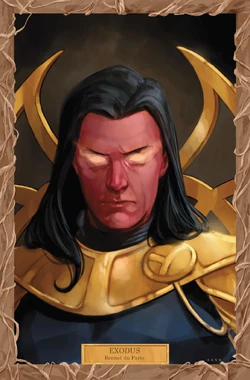


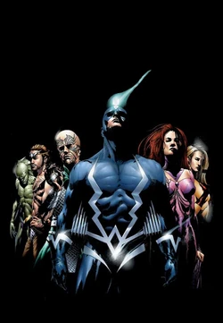

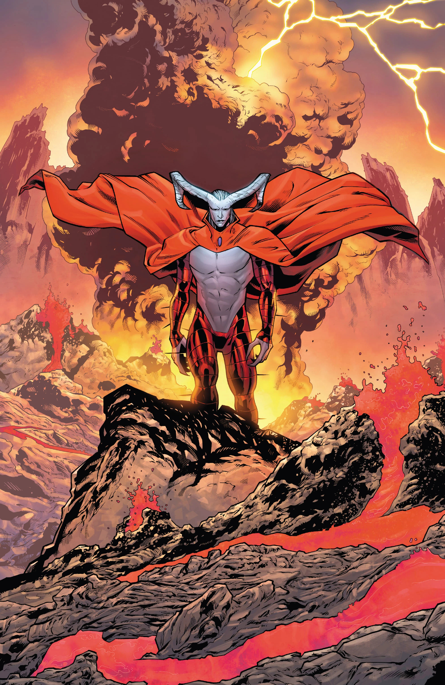
Équipes affiliées